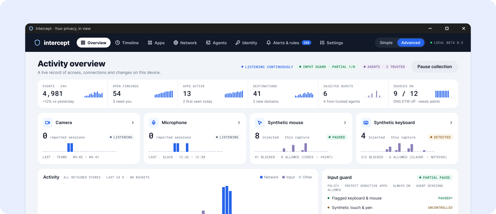
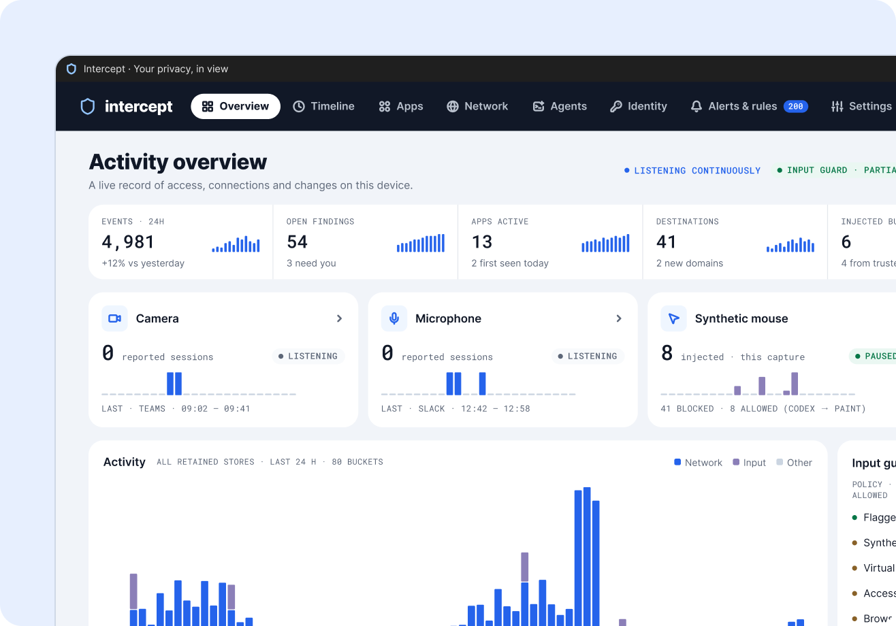
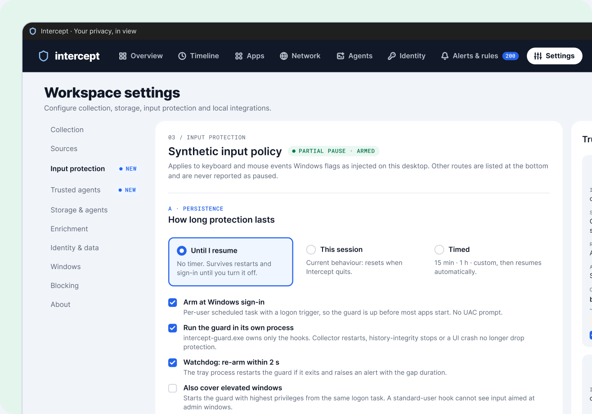
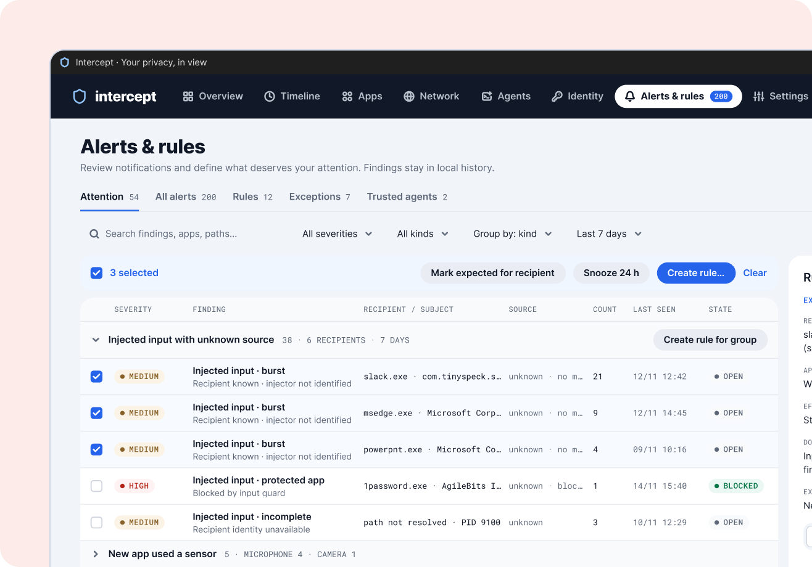
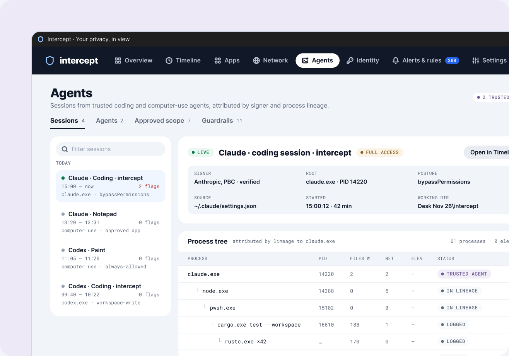

Advanced mode
Every event, every rule, every field, when you need the detail.
Simple mode keeps the common actions one click away. Advanced mode keeps the full record: the live feed, process trees, destinations, rules and guard health. Switch at any time; the data and the confirmations are the same.
Same record in both modes
Switch from the title bar
Every field shows its source

Stop 1 · Overview
A live record of access, connections and changes.
The Overview puts every signal on one screen: sensors, synthetic input, network, agents and sign-ins, with a 24-hour activity chart and the live feed underneath.
Counters for events, open findings, apps, destinations and agents
Input guard status, route by route
Live feed with the source and attribution of every row

Stop 2 · Settings › Input protection
Tune the guard, rule by rule.
Choose how long protection lasts, where it applies and which rules switch it. Rules run in order, and locked rules always win.
Until I resume, this session only, or timed
Ordered automation rules for away, agent sessions and bypasses
What the guard can prove: renewals, callback timing and gaps

Stop 3 · Alerts & rules
Filter, group and write your own rules.
Work through findings in a table, act on several at once, and preview a rule before you create it, including exactly what it would silence.
Group by kind, recipient or source
Rule preview counts the open findings it would match
Recipient rules warn that they can’t tell who typed

Stop 4 · Agents › Session detail
Process trees, destinations and guardrail counters.
Open any agent session to see the lineage from the agent root, files written inside and outside scope, every destination and the exact event that tripped a guardrail.
Process tree with PID, files, network and elevation
Destinations checked against your approved list
Per-session guardrail counters, and export for review

Simple or Advanced
Two views of the same record.
Both modes read the same local history and use the same four confirmation levels. Pick the one that fits the moment, and switch from the title bar.
Simple
Advanced
The mode switch sits in the app’s title bar, next to Local only.
| Simple | Advanced |
|---|---|---|
Navigation | Home, Protection, AI agents, Privacy, Alerts | Overview, Timeline, Apps, Network, Agents, Identity, Alerts & rules, Settings |
Home | Status and five feature cards with one action each | Activity overview with counters, chart and live feed |
Alerts | Grouped cards in plain language | A table with filters, bulk actions and rule preview |
Input protection | Three levels and your protected apps | Persistence, scope, ordered rules and guard health |
AI agents | Live session summary and guardrails | Process tree, destinations and per-session counters |
Confirmations | The same four levels | The same four levels |
Keep reading
See what your PC is really doing.
Free, MIT-licensed and local. Ready in a few minutes.